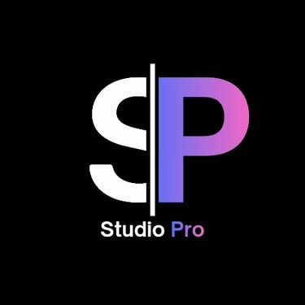

STAGE 02You are here
Design & Build
Visual direction, every page design, revisions, development, CMS and staging.

SP StudioPro Start a ProjectOnce your blueprint is signed off, we turn it into real designs you approve in writing — then build a fast, responsive site you can edit yourself. Typical duration: 3–4 working weeks, with a preview link every single week.
Goals, sitemap, wireframes, SEO map, scope, timeline and a fixed quote.
Visual direction, every page design, revisions, development, CMS and staging.
Testing, on-page SEO, launch day, training, and the SEO that keeps you found.
Stage 01 removed the guesswork. Stage 02 removes the risk — nothing is built until you have seen and approved it.
You sign off the design in writing before a line of code is written. If something is wrong, it costs an edit — not a rebuild.
Buttons, cards, forms and menus are designed once and reused everywhere — so page 12 looks as considered as your homepage.
Image budgets, lazy loading, clean code and caching are decisions we make while designing — not a repair job after launch.
A proper CMS, a training session and a written guide — daily updates never need a developer or a support ticket.
Round one fixes structure, round two fixes polish. Anything beyond that becomes a written change note.
You never wonder what is happening — each week you get a link you can click through.
Your live site is never used as a test area. Everything is rehearsed on a private staging address.
Development follows the signed-off designs exactly, so the finished site matches what you approved.
Design comes first and is approved, then build. Each step ends with something you can look at.
Your blueprint told us what to build. Now we decide how it should feel — two clearly different directions, you choose one.
The homepage sets the tone for everything else. We design it fully — desktop and mobile — and get your approval before the rest of the site follows.
Every remaining template is designed as part of a reusable system, so the site looks intentional twenty pages in — not improvised.
Two structured revision rounds, then the design is locked — so development starts with zero guesswork and zero rework.
Now we code it: semantic, responsive, quick to load and easy for Google to read — a hand-built site, not a stack of plugins.
You get a site you can actually run — with a full rehearsal, and a training session, before the public ever sees it.
Design and development overlap slightly where it is safe; your two review windows are already built into these days.
A typical business site runs 15–20 working days. Larger catalogues, bookings or custom features take longer — the exact number is fixed in your Stage 01 scope document, and if anything moves we tell you the new date before it happens.
At the end of Stage 02 you hold the designs, the working site on staging, and everything you need to edit it.
Design files, component library and source code are handed over with the site. Nothing is held hostage, and nothing is hidden from you.
Six things from your side keep a four-week build on four weeks.
Everything below — nothing more.
New ideas are welcome — surprises are not.
Everything inside the signed-off blueprint is simply done. Anything outside it gets a short written note first, showing the effect on price and timing, so you decide with full information.
What clients ask us most about design and development.
Testing on real devices, on-page SEO, launch day with backups and redirects, your training handover — then the monthly work that keeps customers finding you.